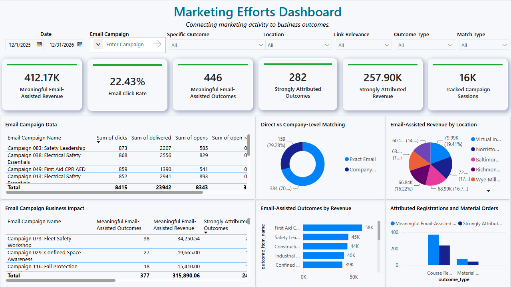
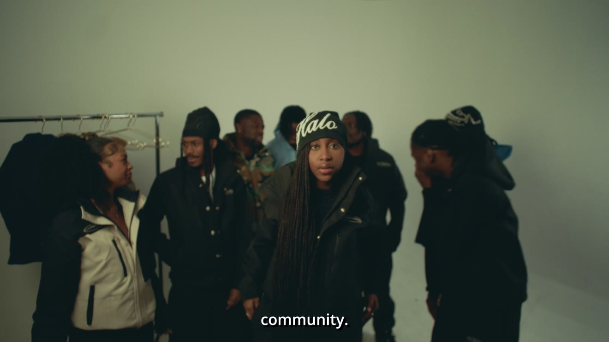
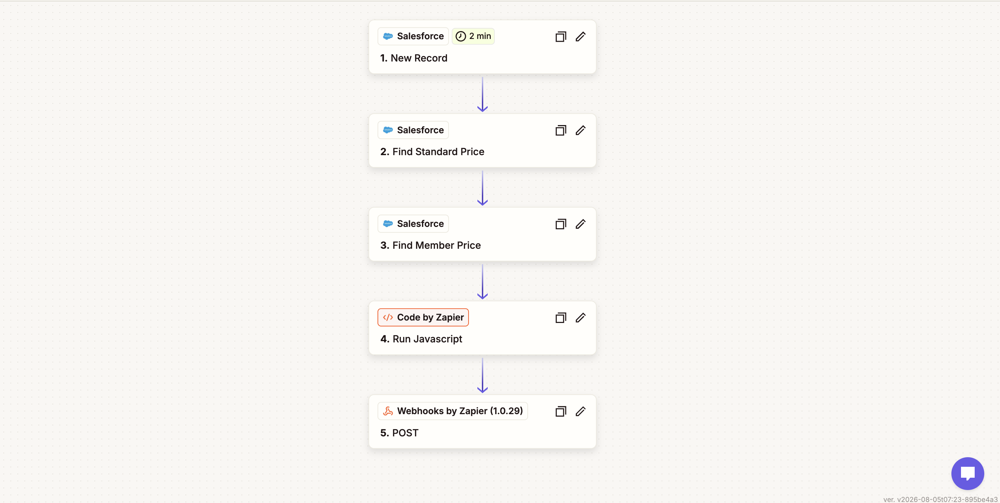
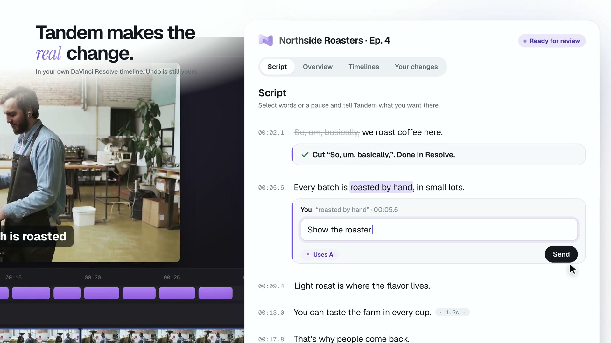
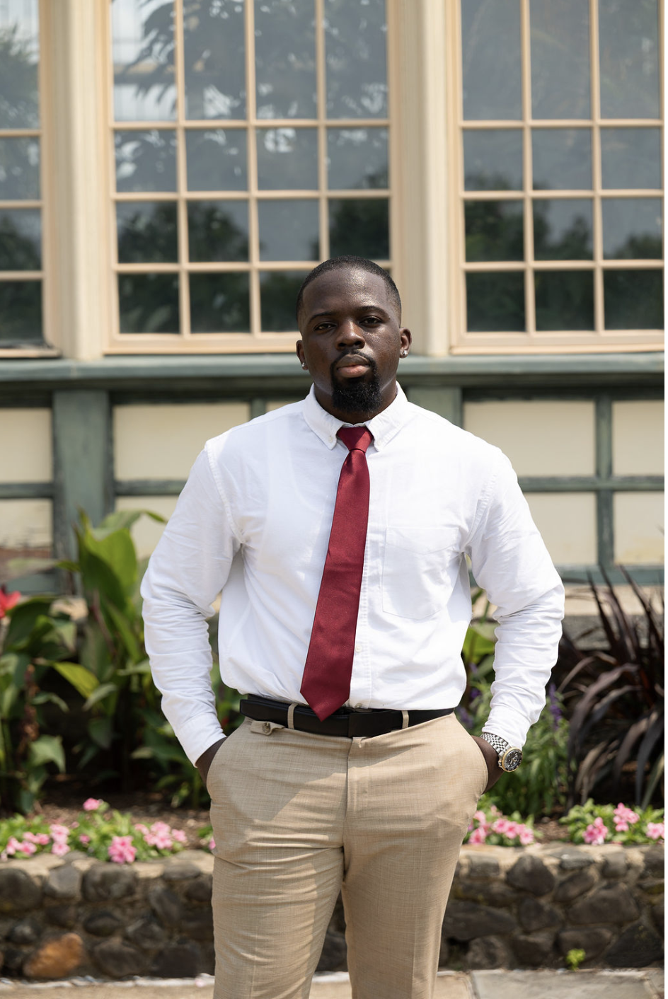

Oluwaseun Fadeyi / Systems + marketing
Business
systems.
Digital marketing.
Creative
direction.
Digital campaigns.
I work across marketing, analytics, and creative production. I develop campaigns, build the systems behind them, and use data to understand what could work better.
I develop campaign concepts, direct the visual approach, and produce content with the audience and business goal in mind. Analytics and workflow design help me connect that creative work to how it gets delivered and measured.
01 / Explore by discipline
Two areas of work.
One connected practice.
I understand the creative work, the business objectives behind it, and the systems needed to deliver and measure it.
Systems & analytics
CRM architecture, business intelligence, and process automation. I design the data and workflows that help teams operate and make informed decisions.


Digital content & direction
Marketing strategy, creative direction, and digital production for commercial, lifestyle, and community campaigns.
Selected projects.
A selection of work in business systems, analytics, and digital marketing.
Who’s AUX Music Ops
An independent content operations platform connecting music research, saved writing, weekly planning, assets, and production handoffs. It began with playlist automation.
Case study ↗
Operational Data Integration
Improved CRM data quality and integrated lead management, course operations, and ecommerce to support staff workflows and future reporting.
Case study ↗The 5K Social
Created promotional content for a run-club collaboration, with an emphasis on community, movement, and the experience of taking part.
View campaign ↗
Tandem
AI-assisted video editing and creative workflow, built around reusable Styles, reviewable timelines, and human creative judgment. An evolving local beta.
Case study ↗
Business systems.
Creative marketing.
I work across marketing, business systems, analytics, and creative production. At Chesapeake Region Safety Council, I develop content and campaigns for professional education and consulting while improving the workflows and reporting behind the work. My consulting and agency experience also includes campaigns across ecommerce, entertainment, and events.
Outside my day-to-day work, I build tools around problems I’ve encountered as a marketer and producer. Music Ops connects research, editorial planning, and production; Tandem explores AI-assisted editing with creative decisions in human hands.
I originally studied biology and biotechnology. That background still shapes how I research problems, test assumptions, and think about processes. I enjoy figuring out what could work better and building toward it.